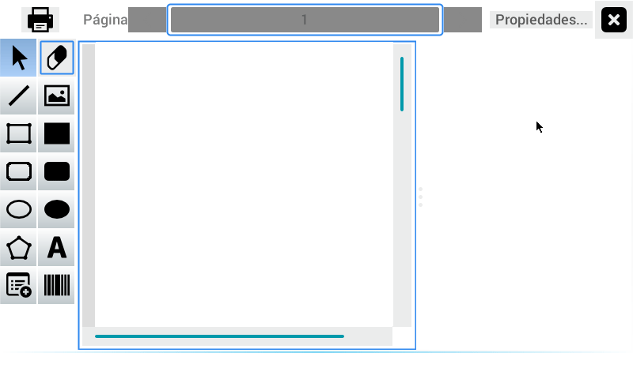
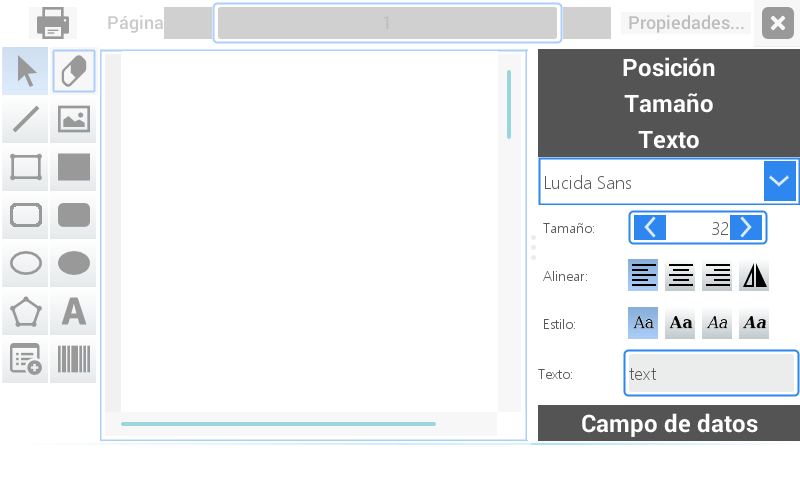
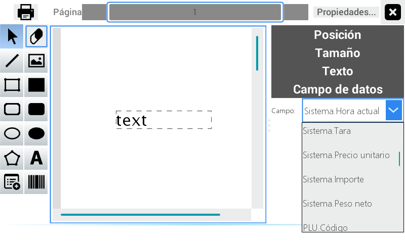
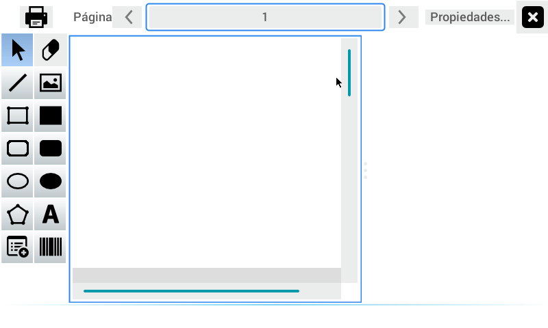
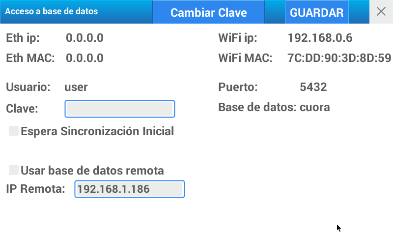
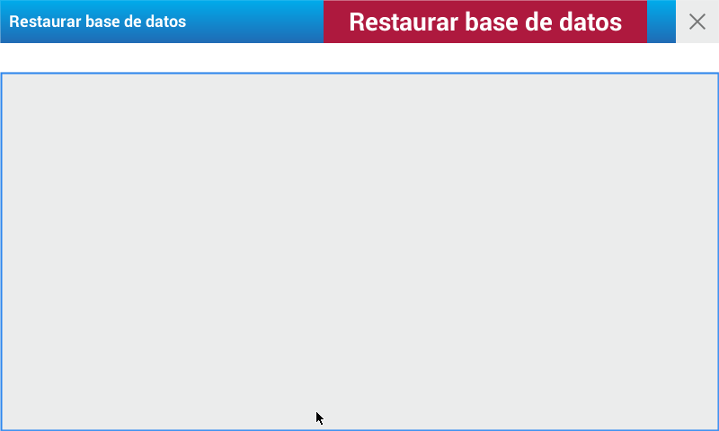

Configuración
En este punto del menú es posible establecer los parámetros necesarios para asegurar un correcto funcionamiento del equipo, así como adaptarlo para el uso particular de su empresa, el estado de conexión a redes, permisos de usuarios, etc.
General
Esta opción permite la configuración general del equipo para adaptar la balanza a las necesidades puntuales de su empresa.
Comenzaremos primero detallando la función que cumple cada solapa:
- Datos Empresa: en este espacio puede incorporar información referida a su empresa o comercio. La misma se visualizará como encabezado en cada una de las impresiones del equipo
- Páginas: aquí podrá editar el nombre de las páginas iniciales de accesos directos
- Ventas: permite determinar permisos de acceso a cambios de precios, venta de genéricos y visualizar el número del último ticket impreso
- Balanza: en este apartado se establece el Nº de balanza (para el caso de varios equipos en operación), visualización del puntero en la pantalla, tiempo de espera de las teclas especiales y de la marquesina, modo de la balanza, entre otras funciones
- Impresión: permite definir la cantidad de copias, auto rewind, modo comprimido, imprimir QR (en ticket)
- Fecha y Hora: permite definir el modo que sincronizará la fecha y hora
- Importación: permite definir una conexión a un FTP para importar un archivo
A continuación encontrará los pasos a seguir para completar los datos en cada solapa.
Ingrese al menú presionando la tecla .
Seleccione usuario y digite la contraseña correspondiente.
Presione Aceptar
Elija la opción Configuración ubicada en el cuadrante inferior derecho de la pantalla
En la pantalla se visualiza el menú completo de este módulo. Presione General
Una vez ubicado en la solapa Datos Empresa encontrará el primer campo denominado Nombre. Aquí puede colocar el término que identifica a su empresa. Para ello presione el campo de escritura para activarlo, luego la tecla para habilitar el teclado alfanumérico. Digite las letras y/o números necesarios y luego presione Entrar
Complete los campos siguientes Dirección del Comercio y Teléfono siguiendo las acciones detalladas en el paso anterior. Puede utilizar también el teclado numérico de la balanza.
En el campo imagen podrá seleccionar el logo de su empresa (ancho máximo 400 pixeles) Presione sobre el campo en blanco para habilitar el menú de búsqueda. Puede localizar la imagen desplazándose con el scroll en el cuadrante derecho o activar el campo de texto para realizar la búsqueda por palabra clave.
Presione Guardar
En la solapa siguiente Páginas debe colocar el nombre que identifica a las páginas de acceso rápido.
Presione sobre cada línea para activar el campo de escritura
Presione la tecla para habilitar el teclado alfanumérico
Digite las letras o números necesarios
Presione Guardar

La solapa de Ventas debe seleccionar las opciones disponibles en los siguientes ítems:
- Permite venta genéricos
- Operador autorizado a cambiar precios
- Se visualiza el último ticket impreso y permite resetear el ticket
- Permite reimpresión de tickets
Permite descuentos
Al finalizar presione GUARDAR.
En la solapa Balanza puede:
Colocar el número que identifica al equipo dentro de su negocio utilizando el campo Nº de Balanza. Ingrese el número a través del teclado o presionando las flechas ubicadas en los extremos del recuadro.
Seleccione el Tiempo marquesina desplazando el cursor hacia la derecha para incrementar la duración.
Presione el recuadro gris en la línea Protección de interferencias para activarlo. En el recuadro contiguo desplace el cursor a la derecha para aumentar el número o a la izquierda para reducirlo.
Para activar VNC primero ingrese la clave en el campo de texto habilitado para tal fin y luego mueva la tecla hacia la derecha para activarlo.
Presione el selector ON-OFF Modo Autoservicio para activarlo y cambiar el modo de la balanza. Debe reiniciar la balanza para que se aplique el cambio.
Presione Guardar.
Impresión
Para fijar el número de ticket a obtener cada vez que se realice una venta con impresión coloque el número en el recuadro Cantidad de Copias. Para ello utilice las flechas o active el campo de texto
Active Auto Rewind cuando imprima etiquetas
Active el Modo Comprimido para reducir el espacio entre lineas
Permite imprimir codigo QR
Permite seleccionar el tipo de codigo QR
Presione Guardar
Fecha y Hora
Active Habilitar sincronización para que la fecha y hora del equipo se sincronicen automaticamente
Active Fecha y Hora desde internet si desea que los datos se actualicen desde internet
En el campo NTP Server Local puede ingresar la direccion de su servidor de Fecha y Hora local. Podra hacer esto solo si esta desactivado el campo Fecha y Hora desde internet
Importación
Active Importar desde servidor FTP y complete los campos a continuación
Opcionalmente puede activar Usar SFTP si desea establecer una conexión segura con el servidor FTP

En Periodicidad puede seleccionar el tipo de intervalo, ya sea en horas o minutos, en el que se realizarán las importaciones y configurar los parámetros para tal fín

Active Enviar email de verificación y complete los campos a continuación si desea que se notifique a uno o varios destinatarios
Redes
El equipo cuenta con dos clases de conexión:
- Ethernet
- Wi-Fi
La balanza posee un puerto de comunicación ubicado en la parte inferior del equipo que le permite comunicarse con una PC ó conectarse en red con otros equipos. Para mayor seguridad al conectar su balanza en la red de comunicaciones solicite la asistencia técnica de un ATAS (Agente Técnico Autorizado SYSTEL).
Ingrese al menú presionando la tecla .
Seleccione usuario y digite la contraseña correspondiente
Presione Aceptar
Elija la opción Configuración ubicada en el cuadrante inferior derecho de la pantalla
En la pantalla se visualiza el menú completo de este módulo. Presione Redes
En el margen izquierdo se visualizan tres recuadros:
- Ethernet
- Wi-Fi
- Salir
Presionando Ethernet se habilita la opción que tiene el equipo para conectarse con una PC o en red con otros equipos
Presione Conectar
Al seleccionar Wi-Fi se visualizan todas las redes disponibles
Presione Scan para buscar las redes disponibles
Seleccione la red a la que desee conectarse
Luego ingrese la contraseña de la red
Presione aceptar para que el equipo guarde la red y se conecte
Accesos
Permite configurar las teclas de acceso rápido página por página
Ingrese al menú presionando la tecla
Seleccione usuario y digite la contraseña correspondiente
Presione Aceptar
Elija la opción Configuración ubicada en el cuadrante inferior derecho de la pantalla
En la pantalla se visualiza el menú completo de este módulo. Presione Accesos
Primero seleccione la página donde se creará el acceso rápido
Presione el cuadro donde desea ubicarlo
Se visualiza la siguiente pantalla
Seleccione el PLU que se localizará allí presionando sobre el mismo
Para realizar la búsqueda de un PLU active primero los filtros presionado Filtro on/off ubicado en el margen superior derecho
Luego utilice los campos dispuestos para ajustar la búsqueda por Departamento y/o Grupo
También dispone de un campo de texto para realizar la búsqueda por número o por palabra clave
En la pantalla inicial se visualiza el PLU elegido
Para eliminar un acceso mantenga presionado el cuadro por unos segundos

Se visualiza un mensaje de confirmación
Presione Si para confirmar la operación o Cancelar para rechazarla
Luego Presione Salir
Fecha y hora
Puede utilizar esta opción para modificar la hora y fecha de la balanza.
Ingrese al menú presionando la tecla .
Seleccione usuario y digite la contraseña correspondiente.
Presione Aceptar
Elija la opción Configuración ubicada en el cuadrante inferior derecho de la pantalla
En la pantalla se visualiza el menú completo de este módulo. Presione Fecha y Hora
Para seleccionar el mes utilice las flechas ubicadas en los extremos del primer campo
Presionado la flecha que se ubicada entre ambas líneas puede avanzar mes por mes
De la misma manera seleccione el año en curso
Seleccione el día correcto en el calendario
Por último modifique el horario en el campo Hora. Para ello puede utilizar las flechas ubicadas en el extremo del recuadro o activar el campo y colocar la hora correspondiente a través del teclado numérico del equipo
Presione Guardar.
Tickets
Permite editar, en forma completa, el texto y formato con que se imprimirá el ticket.
A continuación detallaremos las opciones con las que cuenta el equipo para el diseño de un ticket de venta.
Ingrese al menú presionando la tecla
Seleccione usuario y digite la contraseña correspondiente
Presione Aceptar
Elija la opción Configuración ubicada en el cuadrante inferior derecho de la pantalla
En la pantalla se visualiza el menú completo de este módulo. Presione Tickets

En la pantalla se visualizan tres recuadros:
- En el central puede seleccionar la ubicación de la información que se imprimirá en el ticket
- El izquierdo presenta una serie de acciones para editar el texto, realizar dibujos y seleccionar otros campos de información (Ej. Tabla nutricional y Código de Barras).
Al presionar sobre alguno de los espacios de texto del recuadro central se habilita, a la derecha de la pantalla, un tercer campo de acciones:
- Aquí se encuentran las opciones de Posición - Tamaño - Texto y Campo de datos. También se visualizan allí las opciones que se habilitan con posterioridad.

De acuerdo al diseño a realizar, seleccione las acciones disponibles en el cuadrante izquierdo y ubíquelas en el cuadro central
Para insertar una imagen seleccione la opción y colóquela en el lugar elegido
Luego de esta acción, se observa un rectángulo de color negro. Presione sobre el mismo para activarlo

Se habilitará a la izquierda la línea Imagen
Habilite el menú desplegable del campo Imagen y seleccione la opción correspondiente

Presionado sobre cualquiera de las líneas de texto se habilitan las propiedades a la derecha
En la opción Texto puede seleccionar la tipografía presionando el menú desplegable
Luego elegir el Tamaño de la letra a través de las flechas ubicadas en el extremo del recuadro o colocando el número mediante el teclado numérico
Seleccione Alinear y Estilo presionando sobre el formato que se ajusta a su necesidad
En el campo de Texto coloque el término que aparecerán en el espacio seleccionado. Para ello presione el campo para activarlo y habilite el teclado alfanumérico

En el campo Posición coloque el las líneas X e Y los valores correspondientes

Realice la misma operación en el campo Tamaño con los cuadros de Ancho y Alto

Luego seleccione Campo de Datos y elija la información que se visualizará en dicho espacio. Para ello presione sobre la flecha para observar el menú desplegable
Al presionar sobre la imagen del código de barras del recuadro izquierdo y luego sobre el campo de escritura puede insertar el código de barras del producto

Se habilitará a la izquierda una línea adicional denominada Código de barras” y los siguientes comandos para editarla: Cod. Barras - Valor - Tipo - Orientación - Ancho de barra - Altura
Al presionar la tabla del recuadro izquierdo y luego sobre el campo de escritura puede insertar una tabla nutricional

Se habilitará a la izquierda una línea adicional denominada Info. Nutricional y los siguientes comandos para editarla: Tamaño cabecera - Altura de renglón - Mostrar líneas horizontales - Mostrar líneas verticales
Presionando el recuadro Propiedades ubicado en el margen inferior derecho de la pantalla puede ajustar la altura y los márgenes de impresión

Luego Presione Guardar o Cancelar para volver a la pantalla inicial
Para visualizar los tickets creados utilice la línea de Página ubicada en el margen superior de la pantalla
En el margen superior izquierdo presione la impresora para visualizar el diseño realizado
Presione X para cerrar el área de trabajo
Etiquetas
Desde esta opción es posible editar el formato de la etiqueta. A continuación detallaremos las opciones con las que cuenta el equipo para el diseño de etiquetas.
Ingrese al menú presionando la tecla
Seleccione usuario y digite la contraseña correspondiente
Presione Aceptar
Elija la opción Configuración ubicada en el cuadrante inferior derecho de la pantalla
En la pantalla se visualiza el menú completo de este módulo. Presione Etiquetas

Para comenzar con la creación de una etiqueta presione Nuevo. Esta acción se encuentra en la barra de navegación ubicada en el margen superior
Una vez ubicado en la pantalla de Datos active el campo Nombre y coloque el nombre del modelo de etiqueta a crear
La palabra Activo aparece tildada por defecto. Cuando desee deshabilitar un modelo de etiqueta, destilde esta acción
Luego de esta acción se visualiza la siguiente pantalla
Seleccione el tipo de template y la cantidad de etiquetas. Presione Aceptar

Continúe con los pasos descriptos en el módulo Ticket para confeccionar las etiquetas de acuerdo a su necesidad
Asignar formato
Permite seleccionar el formato de impresión de los comprobantes. El equipo cuenta con seis formatos preestablecidos:
- pesable venta directa
- pesable pre-empaque
- unitario venta directa
- unitario pre-empaque
- escurridos
Ingrese al menú presionando la tecla
Seleccione usuario y digite la contraseña correspondiente
Presione Aceptar
Elija la opción Configuración ubicada en el cuadrante inferior derecho de la pantalla
En la pantalla se visualiza el menú completo de este módulo. Presione Asignar
Una vez ubicado en la pantalla de Datos seleccione por cada línea el formato de impresión que desee asignar
Presione la lupa para habilitar el menú de búsqueda
Al finalizar presione Guardar
En 2da. solapa Auditoría se muestra información relacionada al registro de datos guardados
Códigos de barras
En cada comprobante de venta, tanto ticket como etiqueta, se imprimirá un código de barras en formato EAN-13.
Desde este acceso podrá modificar la configuración del código de barras, seleccionando entre 3 opciones posibles y determinando el campo, la posición y la cantidad de dígitos que requiera (12 dígitos en total)

La balanza admite la configuración de tres clases diferentes de código de barras:
VENTA POR PESO: artículo PESABLE
Se imprime en el comprobante de venta la siguiente configuración de fábrica: 2 0 P P P P I I I I I I X. El valor por defecto de la cabecera es el número 20, el cual puede utilizarse para que el lector de códigos de la caja identifique dicho artículo como pesable.VENTA POR UNIDAD: artículo por UNIDAD (no pesable)
La configuración definida de fábrica es 2 1 P P P P I I I I I I X y se imprimirá en el comprobante al momento de vender un artículo por unidad. El valor por defecto de la cabecera es el número 21, el cual puede utilizarse para que el lector de códigos de la caja identifique dicho artículo como no pesable.VARIOS: El valor de configuración de fábrica para esta condición es: 2 2 A A I I I I I I I I X
Este código de barras se utilizará cuando dos o más artículos se vendan en un mismo comprobante, y sea por lo tanto imposible incluir el código de artículo en la configuración del código impreso. Para que el lector de la caja pueda diferenciar entre cada configuración, se aconseja utilizar una cabecera (2 dígitos iniciales) de números fijos diferentes para cada configuración.
A continuación describiremos los pasos a seguir para configurar el código de barra de los productos.
Ingrese al menú presionando la tecla .
Seleccione usuario y digite la contraseña correspondiente.
Presione Aceptar.
Elija la opción Configuración ubicada en el cuadrante inferior derecho de la pantalla.
En la pantalla se visualiza el menú completo de este módulo. Presione Códigos de Barra.
Una vez ubicado en la pantalla inicial seleccione primero la especie de código de barra desde el campo Tipo.
Luego complete los campos A, B, C y D presionando la flecha ubicada en el extremo derecho.
Una vez posicionado en el menú desplegable seleccione la opción que desea ubicar en ese orden.
Coloque también la cantidad de dígitos que se visualizarán por cada opción elegida.
En la última línea Resultado puede observar la conformación del código de barras diseñado.
Al finalizar presione Guardar.
Conectividad DB
Permite acceder a la base de datos del equipo, cambiar la clave, seleccionar espera de sincronización inicial y acceder a base de datos remota. Para acceder a este módulo siga los siguientes pasos:
Ingrese al menú presionando la tecla .
Seleccione usuario y digite la contraseña correspondiente.
Presione Aceptar.
Elija la opción Configuración ubicada en el cuadrante inferior derecho de la pantalla.
En la pantalla se visualiza el menú completo de este módulo. Presione Conectividad DB

Una vez ubicado en la pantalla inicial se visualiza información vinculada a la base de datos del equipo.
Si al encender la balanza, por algún problema técnico, no puede tener acceso a la RED de comunicación, para liberar el equipo se debe presionar la tecla SALE. Se visualizará un nuevo mensaje: LOS DATOS DEL EQUIPO PUEDEN ESTAR DESACTUALIZADOS… esto significa que no se concretó la actualización de datos.
Luego ingrese la CLAVE DE ACCESO DE ADMINISTRADOR para comenzar a operar la balanza sin conexión a la RED.
Cuando la balanza está conectada en RED presenta algunos accesos denegados (por seguridad) ya que estos solo pueden ser operados desde el servidor.
Si usted realiza algún cambio en estos puntos, la balanza dará aviso al servidor.
Desde este apartado puede también seleccionar la opción Usar base de datos remota.
Luego de cualquier cambio realizado presione Guardar.
Optim. DB
Permite optimizar el funcionamiento de la base de datos del equipo. Se recomienda utilizar esta opción cuando el equipo comience a realizar las operaciones con lentitud. Para acceder a este módulo siga los siguientes pasos:
Ingrese al menú presionando la tecla .
Seleccione usuario y digite la contraseña correspondiente.
Presione Aceptar.
Elija la opción Configuración ubicada en el cuadrante inferior derecho de la pantalla.
En la pantalla se visualiza el menú completo de este módulo. Presione Optim. DB

Una vez ubicado en la pantalla inicial se visualizan en el margen superior dos opciones.
Presione Vacumm para realizar la limpieza de los datos.
Presione Reindex para ordenar los registros.
Presione X para cerrar el área de trabajo.
Backup DB
Permite realizar una copia de seguridad Para acceder a este módulo siga los siguientes pasos:
Ingrese al menú presionando la tecla .
Seleccione usuario y digite la contraseña correspondiente.
Presione Aceptar.
Elija la opción Configuración ubicada en el cuadrante inferior derecho de la pantalla.
En la pantalla se visualiza el menú completo de este módulo. Presione Backup DB

Una vez ubicado en la pantalla inicial presione Backup ubicado en el margen superior derecho.
Se visualiza un mensaje de espera y el detalle de la operación.
Presione X para cerrar el área de trabajo.
Restore DB
Permite restaurar base de datos Para acceder a este módulo siga los siguientes pasos:
Ingrese al menú presionando la tecla .
Seleccione usuario y digite la contraseña correspondiente.
Presione Aceptar.
Elija la opción Configuración ubicada en el cuadrante inferior derecho de la pantalla.
En la pantalla se visualiza el menú completo de este módulo. Presione Restore DB

Una vez ubicado en la pantalla inicial presione Restaurar base de datos ubicado en el margen superior derecho.
Se visualiza un mensaje de espera y el detalle de la operación.
Presione X para cerrar el área de trabajo
Valores fábrica
Permite restablecer los valores de la balanza a su estado inicial. Para acceder a este módulo siga los siguientes pasos:
Ingrese al menú presionando la tecla .
Seleccione usuario y digite la contraseña correspondiente.
Presione Aceptar.
Elija la opción Configuración ubicada en el cuadrante inferior derecho de la pantalla.
En la pantalla se visualiza el menú completo de este módulo. Presione Valores Fábrica

Una vez ubicado en la pantalla inicial presione Restaurar valores fábrica ubicado en el margen superior derecho.
Se visualiza un mensaje de espera y el detalle de la operación.
Presione X para cerrar el área de trabajo.
Versión

Permite conocer las versiones de las aplicaciones de software que componen el sistema. Para acceder a este módulo siga los siguientes pasos:
Ingrese al menú presionando la tecla .
Seleccione usuario y digite la contraseña correspondiente.
Presione Aceptar.
Elija la opción Configuración ubicada en el cuadrante inferior derecho de la pantalla.
En la pantalla se visualiza el menú completo de este módulo. Presione Versión